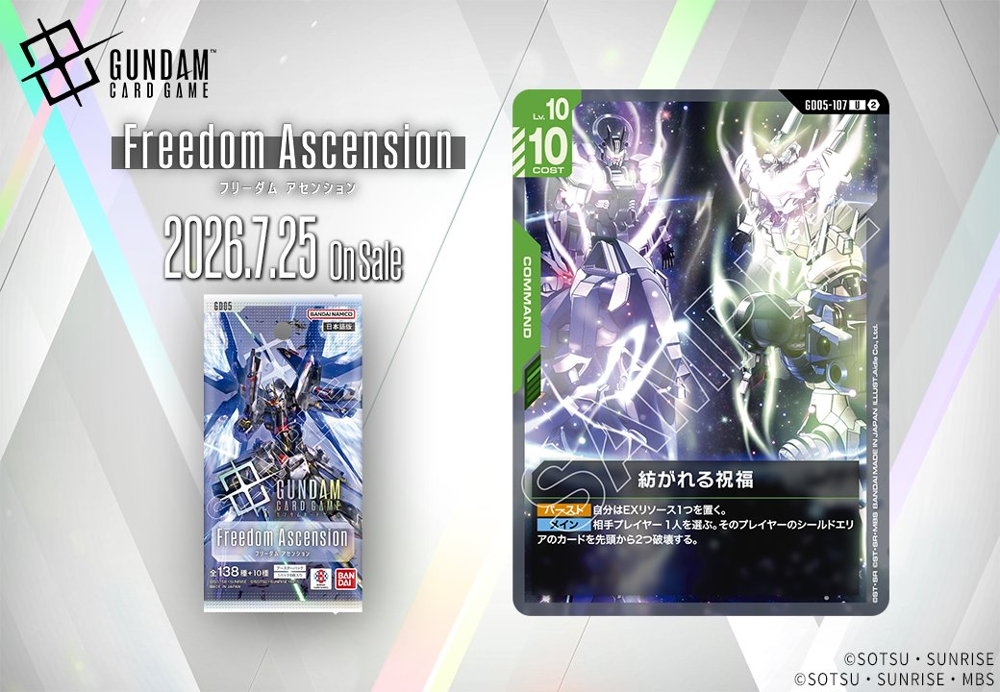
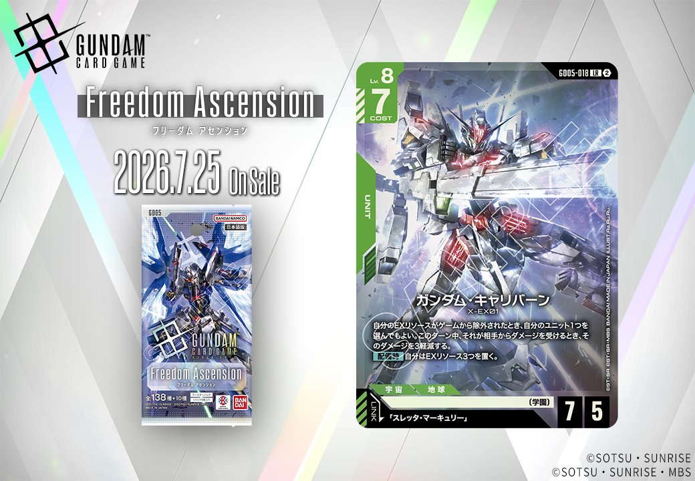
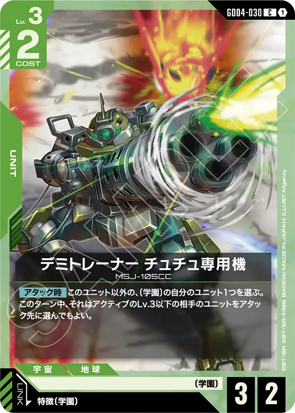
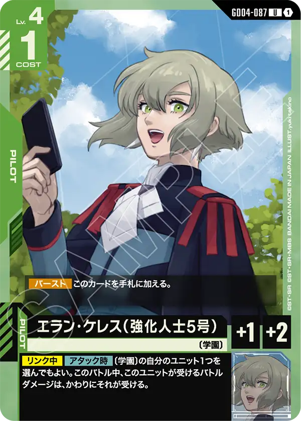

拡張パック「Freedom Ascension」（GD05）より、緑のカード2枚を紹介します。COMMANDの「紡がれる祝福」（GD05-107）と、「スレッタ・マーキュリー」とのリンクを持つUNIT「ガンダム・キャリバーン」（GD05-018）で、いずれも2026年7月25日発売です。

紡がれる祝福 (GD05-107)
| 色 | 緑 | タイプ | COMMAND |
| Lv | 10 | コスト | 10 |
効果: 【バースト】自分はEXリソース1つを置く。【メイン】相手プレイヤー1人を選ぶ。そのプレイヤーのシールドエリアのカードを先頭から2つ破壊する。
紡がれる祝福(GD05-107)は緑のコマンドで、コスト10と重い代わりに【メイン】で相手のシールドエリアのカードを先頭から2つ破壊できる。シールドを直接削る効果は、ウイングガンダム(ST02-001)の《突破5》やザクⅡ(ST03-008)のアタックでシールドへ圧力をかける動きと方向性が合致する。 【バースト】でEXリソース1つを置けるため、シールドから受動的にめくれた際も無駄になりにくい点も評価できる。発売は2026-07-25。

ガンダム・キャリバーン (GD05-018)
| 色 | 緑 | タイプ | UNIT |
| Lv | 8 | コスト | 7 |
| AP | 7 | HP | 5 |
| 特徴 | 〔学園〕 | ||
| リンク条件 | 「スレッタ・マーキュリー」 | ||
効果: 自分のEXリソースがゲームから除外されたとき、自分のユニット1つを選んでもよい。このターン中、それが相手からダメージを受けるとき、そのダメージを3軽減する。【配備時】自分はEXリソース3つを置く。
ガンダム・キャリバーン(GD05-018)は緑のLv.8/COST7・AP7/HP5ユニットで、【配備時】に自分はEXリソース3つを置く。配備後、そのEXリソースがゲームから除外されたとき、自分のユニット1つの受けるダメージをこのターン中3軽減でき、攻めながらユニットを守れる構成です。 リンク先は同日公開(2026-07-25)の「スレッタ・マーキュリー」で、〔学園〕特徴と合わせて同一ユニット上での運用が見込めます。

関連カード
-
 ウイングガンダムゼロ(GD01-024)緑系デッキ内採用率15.8% (611デッキ)
ウイングガンダムゼロ(GD01-024)緑系デッキ内採用率15.8% (611デッキ) -
 ウイングガンダム(ST02-001)緑系デッキ内採用率15.1% (585デッキ)
ウイングガンダム(ST02-001)緑系デッキ内採用率15.1% (585デッキ) -
 ヒイロ・ユイ(ST02-010)緑系デッキ内採用率15.1% (582デッキ)
ヒイロ・ユイ(ST02-010)緑系デッキ内採用率15.1% (582デッキ) -
 ピースミリオン(GD03-125)緑系デッキ内採用率14.6% (564デッキ)
ピースミリオン(GD03-125)緑系デッキ内採用率14.6% (564デッキ) -
 ザクⅡ(ST03-008)緑系デッキ内採用率12.7% (490デッキ)
ザクⅡ(ST03-008)緑系デッキ内採用率12.7% (490デッキ) -
 スレッタ・マーキュリー(GD04-085)緑系デッキ内採用率0.1% (4デッキ)
スレッタ・マーキュリー(GD04-085)緑系デッキ内採用率0.1% (4デッキ) -
ガンダム・ファラクト(GD04-018)緑系デッキ内採用率0% (1デッキ)
-

デミトレーナー チュチュ専用機(GD04-030)緑系デッキ内採用率0% (1デッキ) -

エラン・ケレス（強化人士5号）(GD04-087)緑系デッキ内採用率0% (1デッキ) -
 無差別な暴力(GD04-106)緑系デッキ内採用率0% (1デッキ)
無差別な暴力(GD04-106)緑系デッキ内採用率0% (1デッキ)